library(ggplot2)
library(ggcatppuccin)
set_catppuccin_flavor("mocha")Theme Variants
ggcatppuccin provides three theme variants with different levels of minimalism.
Standard Theme
The standard theme_catppuccin() includes grid lines and
full axis decoration:
ggplot(economics, aes(date, unemploy)) +
geom_line(color = catppuccin_palette("mocha", "blue")) +
theme_catppuccin() +
labs(
title = "US Unemployment Over Time",
x = "Date",
y = "Unemployed (thousands)"
)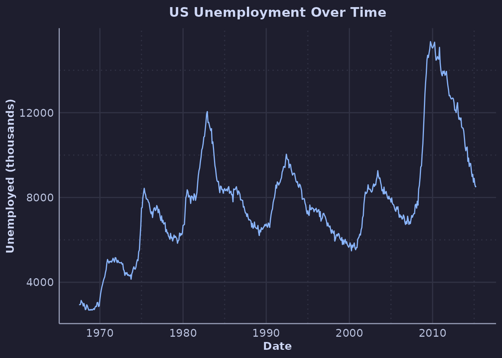
Minimal Theme
theme_catppuccin_minimal() removes grid lines by
default, with optional control:
ggplot(mpg, aes(displ, hwy)) +
geom_point(color = catppuccin_palette("mocha", "mauve"), size = 2) +
theme_catppuccin_minimal() +
labs(
title = "Minimal Theme - No Grid",
x = "Displacement",
y = "Highway MPG"
)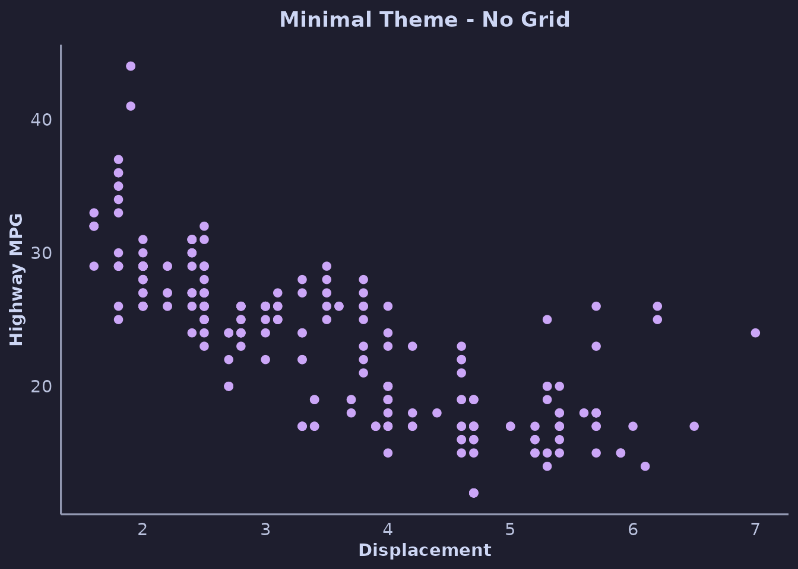
Add major grid lines:
ggplot(mpg, aes(displ, hwy)) +
geom_point(color = catppuccin_palette("mocha", "mauve"), size = 2) +
theme_catppuccin_minimal(grid = "major") +
labs(
title = "Minimal Theme - Major Grid",
x = "Displacement",
y = "Highway MPG"
)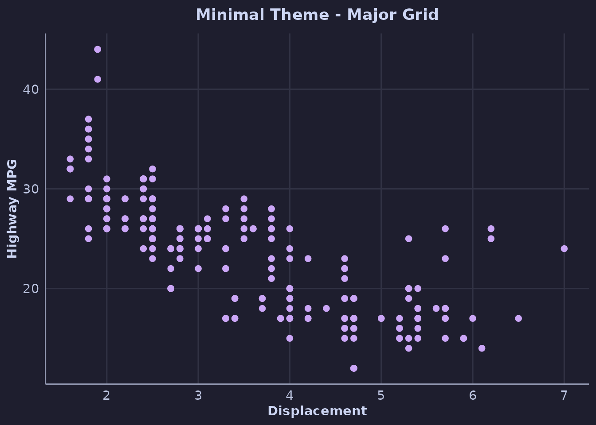
Void Theme
theme_catppuccin_void() removes all axes and grid,
perfect for maps or heatmaps:
ggplot(faithfuld, aes(waiting, eruptions, fill = density)) +
geom_tile() +
scale_fill_catppuccin_c() +
theme_catppuccin_void() +
labs(title = "Old Faithful Density")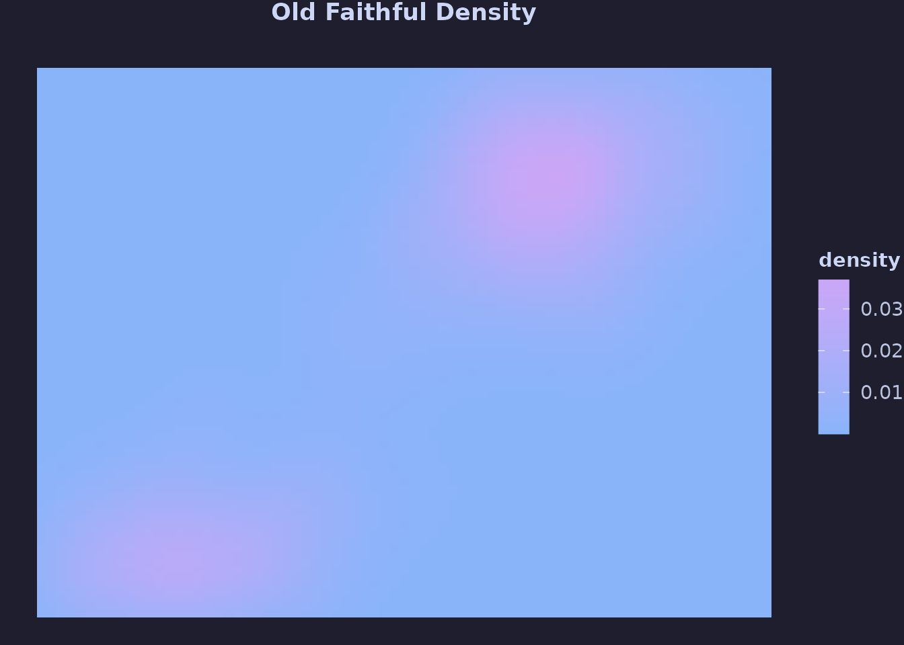
Advanced Scales
Sequential Scales
Sequential scales go from a base color to an accent:
df <- expand.grid(x = 1:10, y = 1:10)
df$z <- df$x + df$y
ggplot(df, aes(x, y, fill = z)) +
geom_tile() +
scale_fill_catppuccin_sequential(accent = "green") +
theme_catppuccin_minimal() +
labs(title = "Sequential Scale - Base to Green")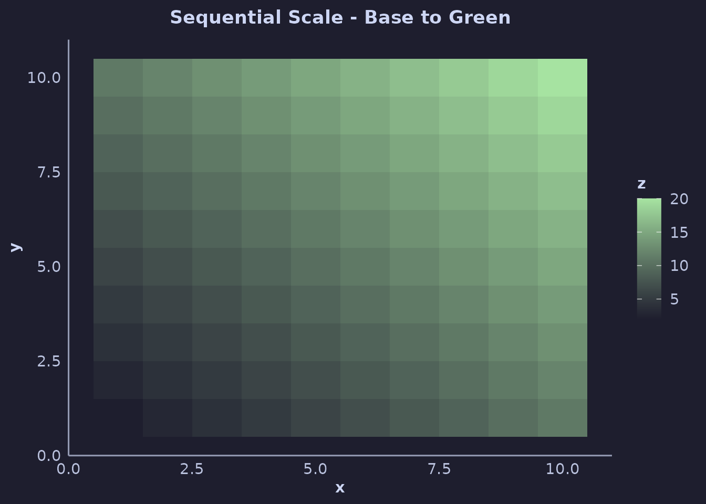
Try different accents:
colors <- c("blue", "mauve", "peach")
plots <- lapply(colors, function(col) {
ggplot(df, aes(x, y, fill = z)) +
geom_tile() +
scale_fill_catppuccin_sequential(accent = col) +
theme_catppuccin_void() +
labs(title = col)
})
if (requireNamespace("patchwork", quietly = TRUE)) {
patchwork::wrap_plots(plots, nrow = 1)
}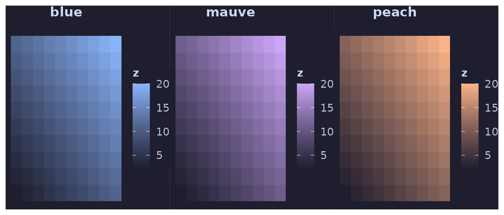
Diverging Scales
Diverging scales use two accent colors with a neutral midpoint:
df$z_centered <- df$z - mean(df$z)
ggplot(df, aes(x, y, fill = z_centered)) +
geom_tile() +
scale_fill_catppuccin_diverging(low_color = "blue", high_color = "red") +
theme_catppuccin_minimal() +
labs(
title = "Diverging Scale",
subtitle = "Blue (low) to Red (high) through base color"
)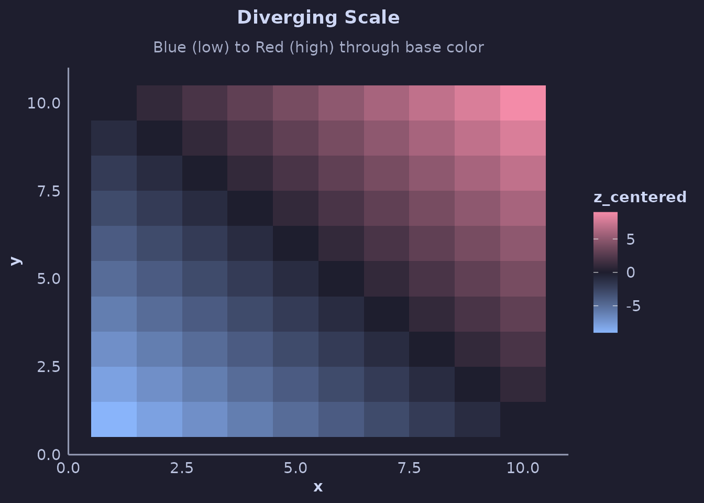
Working with Palette Colors
Extract specific colors for custom use:
# Get specific colors
my_colors <- catppuccin_palette("mocha", c("blue", "red", "green"))
print(my_colors)
#> [1] "#89b4fa" "#f38ba8" "#a6e3a1"
# Use in a plot
ggplot(iris, aes(Sepal.Length, Sepal.Width, color = Species)) +
geom_point(size = 3) +
scale_color_manual(values = my_colors) +
theme_catppuccin() +
labs(title = "Custom Color Selection")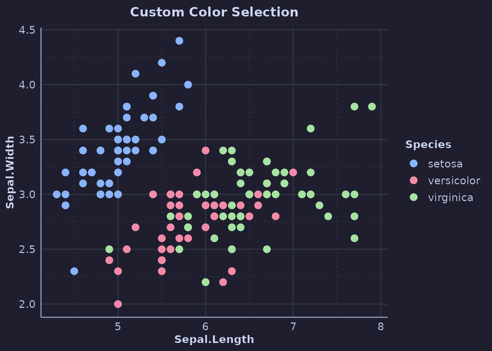
Visualizing Palettes
See all colors in a flavor:
show_catppuccin_palette("mocha", type = "accents")
Compare all flavors:
compare_flavors(type = "accents")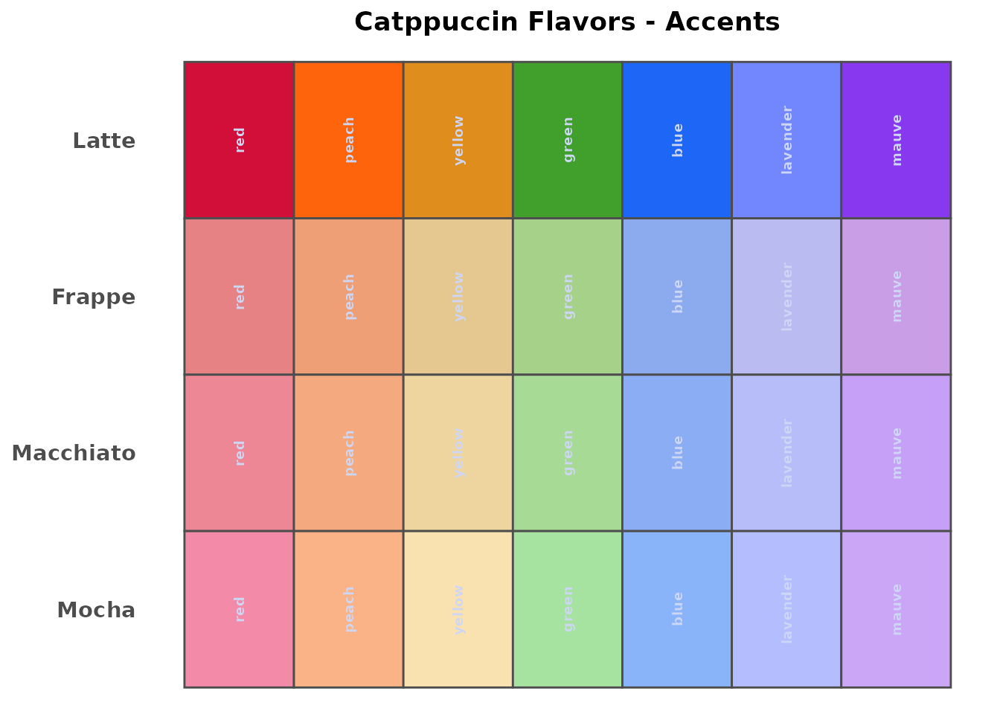
Modifying Themes
You can further customize themes using standard ggplot2 theme modifications:
ggplot(mpg, aes(class, hwy, fill = class)) +
geom_boxplot() +
scale_fill_catppuccin() +
theme_catppuccin() +
theme(
legend.position = "none",
axis.text.x = element_text(angle = 45, hjust = 1),
plot.title.position = "plot"
) +
labs(
title = "Highway MPG by Class",
subtitle = "With custom theme modifications",
x = NULL,
y = "Highway MPG"
)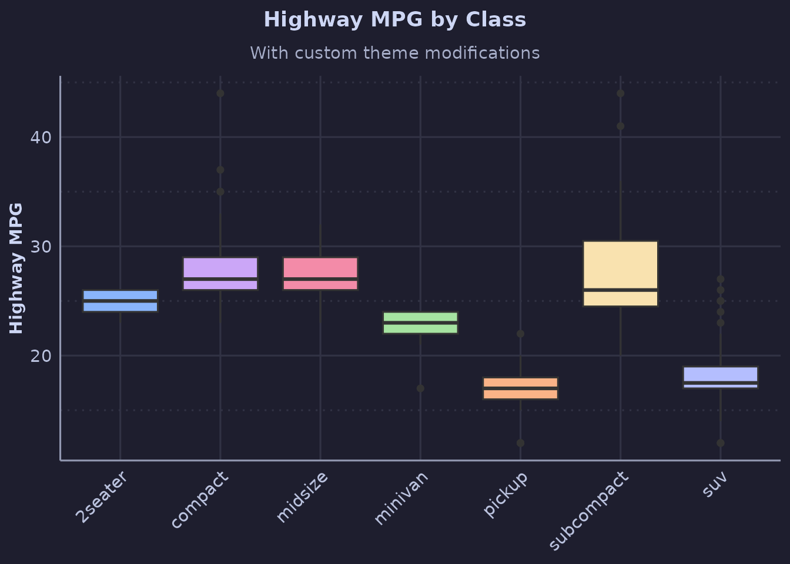
Combining Multiple Aesthetics
ggplot(mtcars, aes(wt, mpg, color = factor(cyl), size = hp)) +
geom_point(alpha = 0.7) +
scale_color_catppuccin() +
theme_catppuccin() +
labs(
title = "Multiple Aesthetics",
x = "Weight (1000 lbs)",
y = "Miles per Gallon",
color = "Cylinders",
size = "Horsepower"
)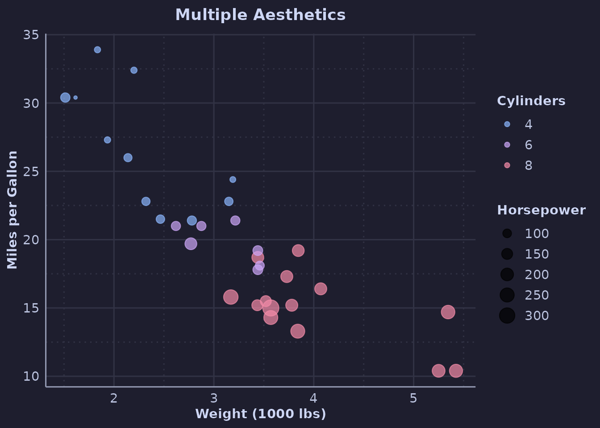